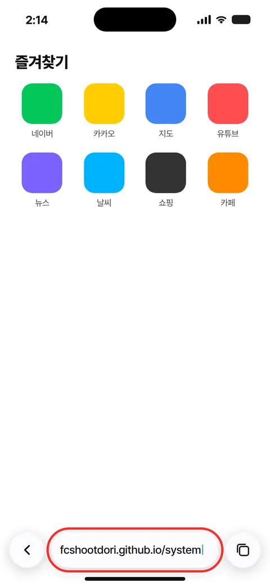
STEP 01 / 06
사파리를 열고 fcshootdori.
카톡에서 링크를 눌렀다면 꼭 사파리로 다시 열어 주세요.
앱스토어에서 받을 필요 없어요. 쓰는 브라우저로 주소를 열고 홈 화면에 설치해 두면, 아이콘을 눌러 앱처럼 바로 열려요. 내 폰과 브라우저를 고르고 순서대로 따라 해 보세요.
그림을 옆으로 밀거나 아래 [다음 단계]를 눌러 넘겨 보세요.

사파리를 열고 fcshootdori.
카톡에서 링크를 눌렀다면 꼭 사파리로 다시 열어 주세요.
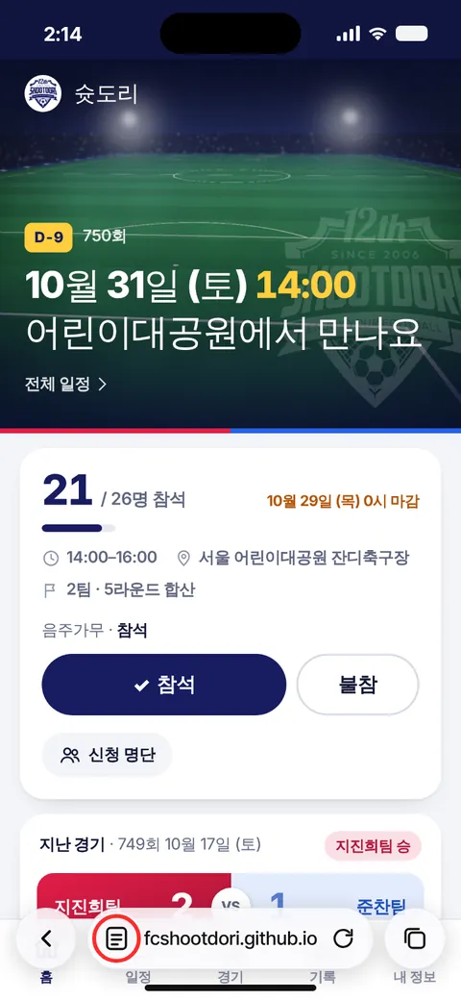
주소표시줄의 아이콘을 누릅니다.
주소창 왼쪽에 있어요. 예전 iOS라면 화면 아래 공유 버튼 을 바로 눌러도 돼요.
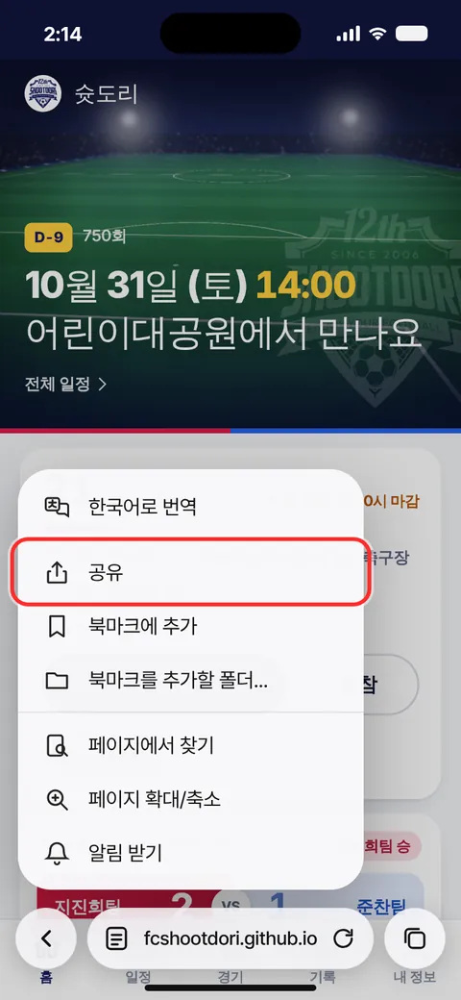
공유 를 선택합니다.
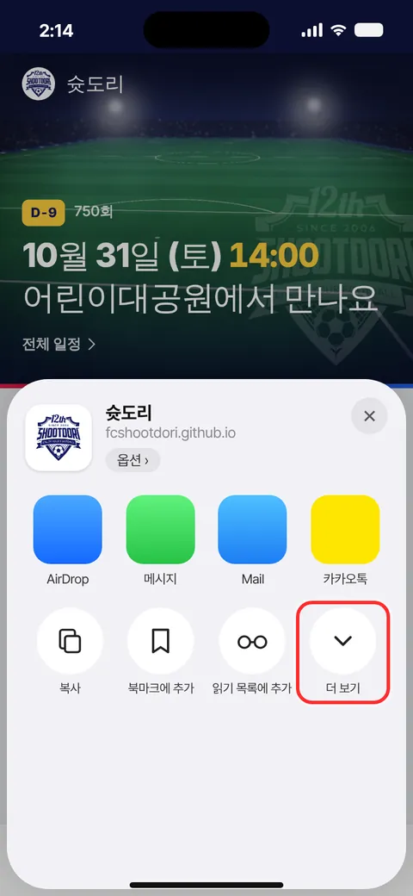
더 보기를 선택합니다.
아이콘 줄 맨 오른쪽에 있어요.
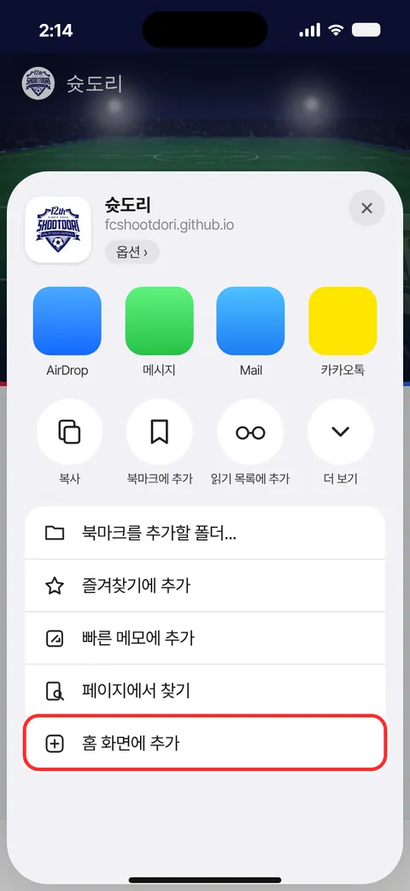
홈 화면에 추가 를 선택합니다.
목록 아래쪽에 있어요. 안 보이면 위로 밀어 보세요.
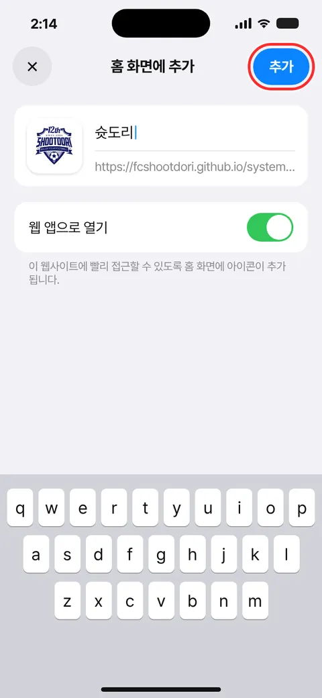
오른쪽 위 추가 를 선택합니다.
"웹 앱으로 열기"는 켜 둔 그대로 두세요.
✓ 끝!홈 화면에 생긴 슛도리 아이콘으로 열면 돼요.
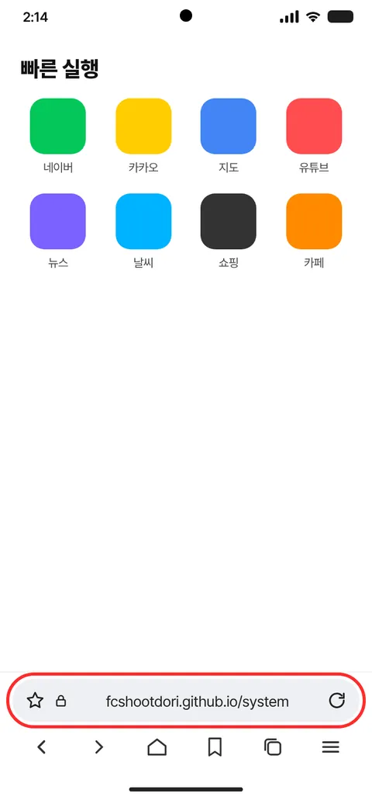
삼성인터넷 앱을 열고 fcshootdori.
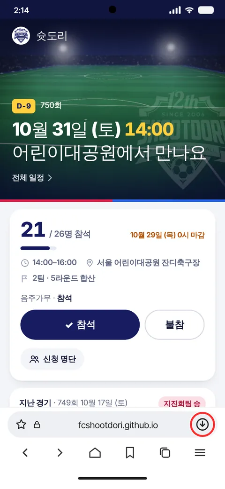
주소표시줄의 아이콘을 누릅니다.
주소창 오른쪽 끝에 있어요.
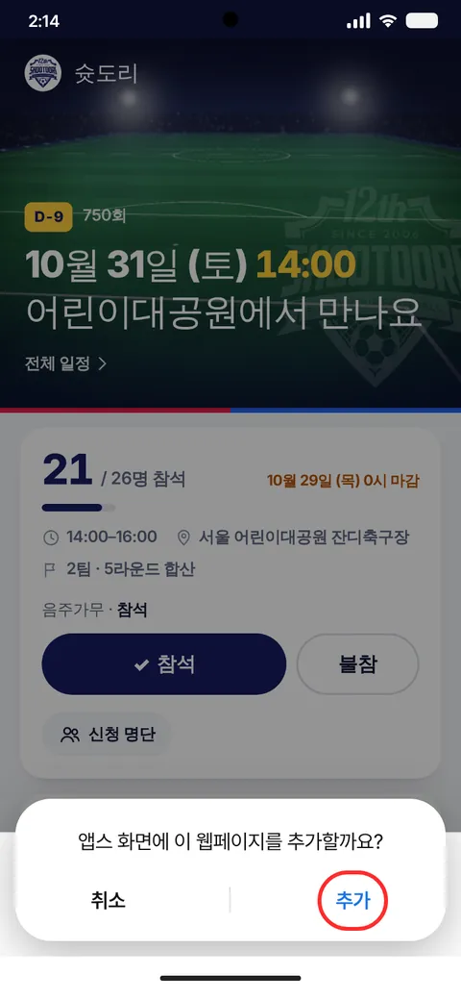
"앱스 화면에 이 웹페이지를 추가할까요?"에서 추가 를 선택합니다.
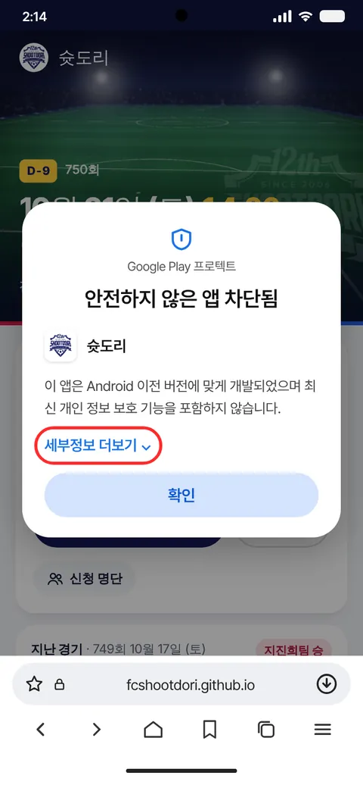
세부정보 더보기 ⌄ 를 선택합니다.
"안전하지 않은 앱 차단됨" 창은 플레이 스토어를 거치지 않은 앱이라 뜨는 안내예요. 우리 팀 앱이니 걱정하지 마세요.
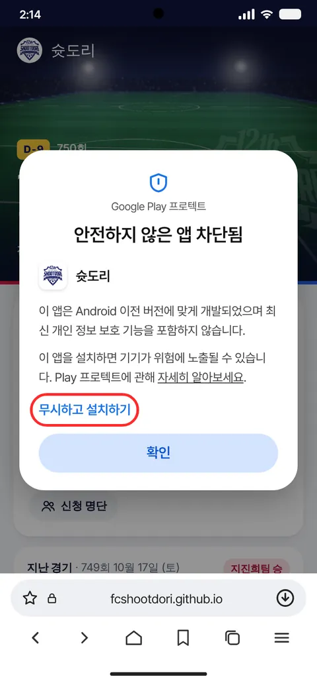
무시하고 설치하기 를 선택합니다.
✓ 끝!홈 화면(앱스 화면)에 생긴 슛도리 아이콘으로 열면 돼요.
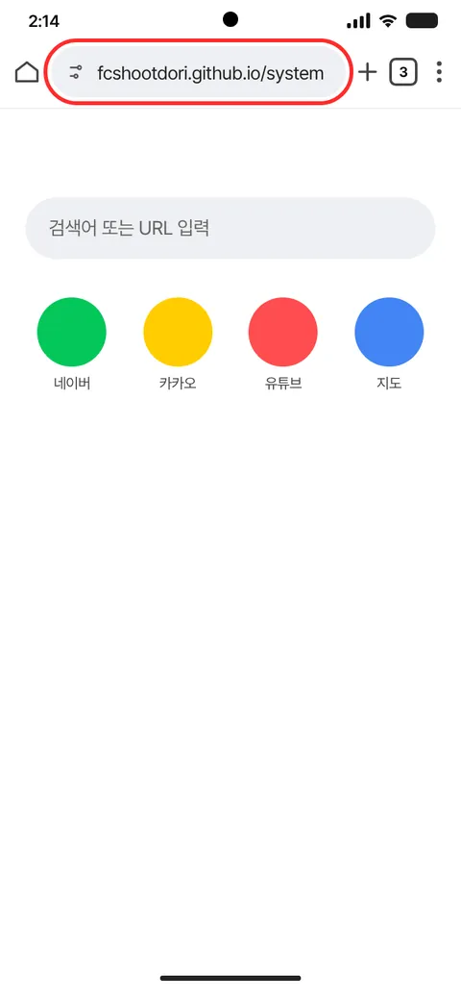
Chrome 앱을 열고 fcshootdori.
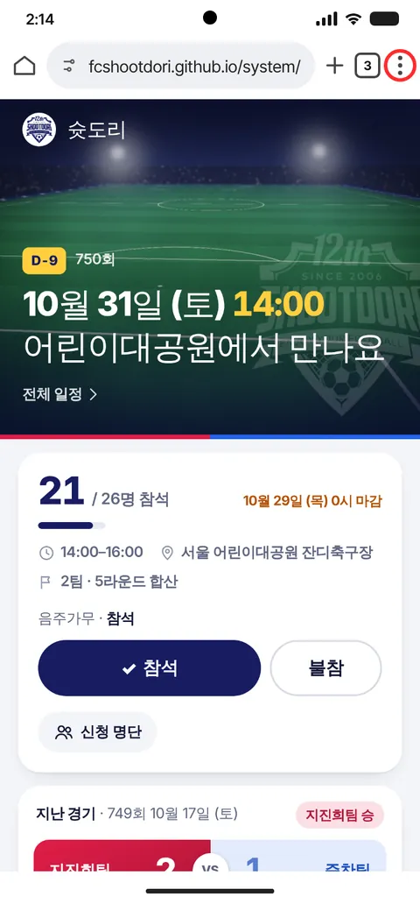
주소표시줄 오른쪽 아이콘을 누릅니다.
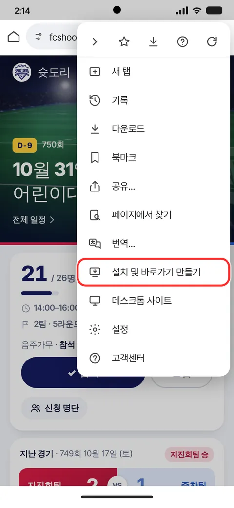
설치 및 바로가기 만들기 를 선택합니다.
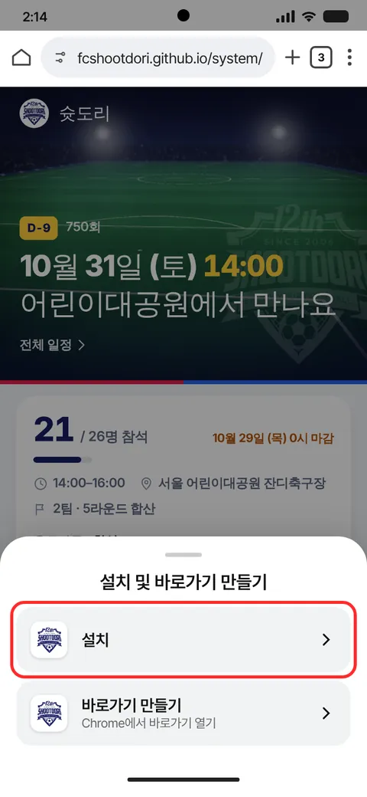
설치 › 를 선택합니다.
"바로가기 만들기"가 아니라 설치를 골라 주세요.
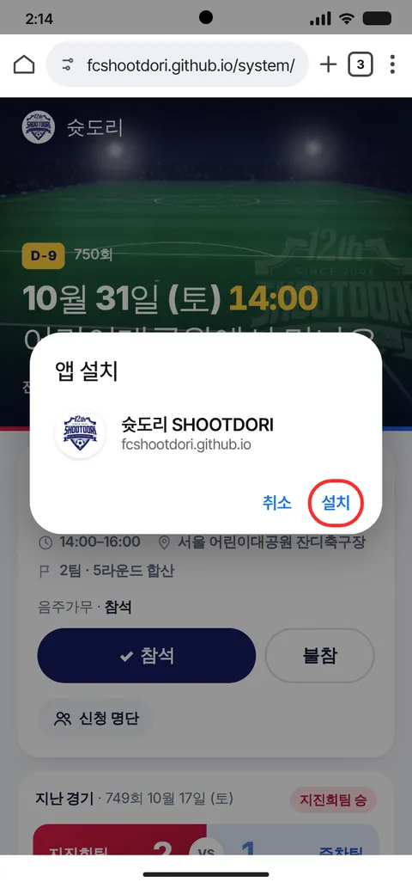
"앱 설치" 창에서 설치 를 선택합니다.
✓ 끝!홈 화면에 생긴 슛도리 아이콘으로 열면 돼요.
카톡 안의 화면에서는 설치가 안 돼요. 오른쪽 위 메뉴에서 다른 브라우저로 열기를 누른 뒤 따라 해 주세요.
이미 설치돼 있으면 메뉴가 안 나와요. 홈 화면이나 앱스 화면에서 슛도리 아이콘을 찾아보세요.
위에서 내가 쓰는 브라우저 탭을 골라 따라 해 주세요. 아이폰은 꼭 사파리에서 해야 해요.
갤럭시에서 플레이 스토어를 거치지 않은 앱이라 뜨는 안내예요. 세부정보 더보기 → 무시하고 설치하기를 누르면 돼요.
설치했으면 아이콘으로 열고 로그인하세요.
카페 닉네임을 고르고 비밀번호를 정하면, 다음부터는 자동으로 로그인돼요.